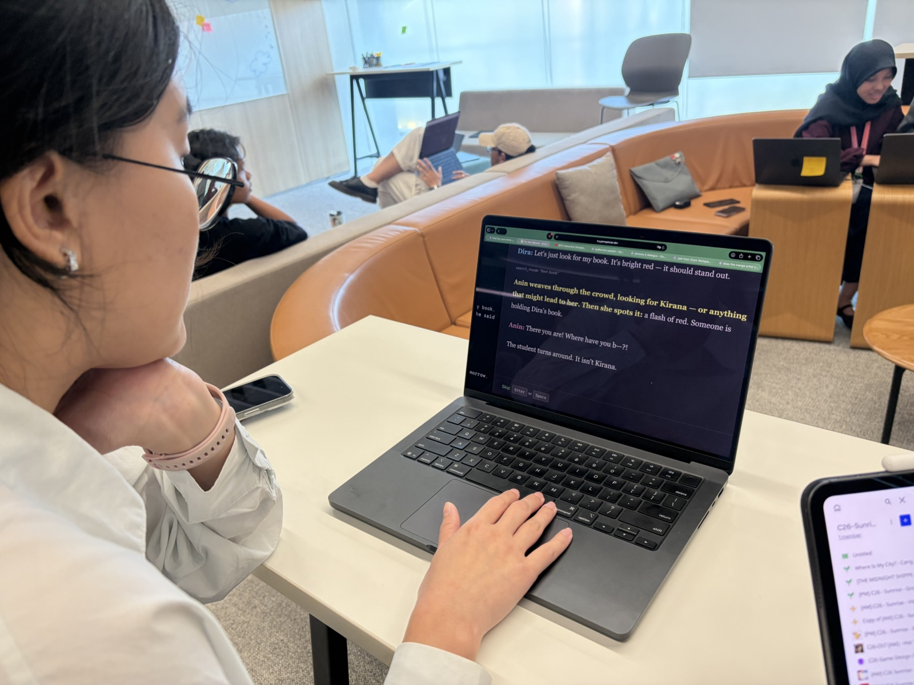
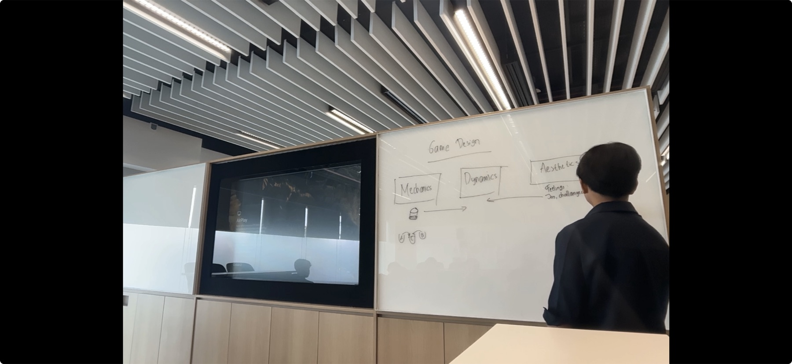

Design practice
I turn a design question into a small test, watch what players do, and let that decide what changes.
Prototype the question
I build the smallest thing that can prove an idea wrong. Paper prototypes test a loop before any code exists. Playable prototypes test timing and feel. Short scripts test structures and economies that are hard to reason about on paper.
On Alcherogue, these tests helped me drop two complete directions before I settled on the pouring system.
Watch what players do
During a test I look for hesitation, feedback people misread, mistakes they repeat, and choices they never notice. Asking “did you like it?” tells me less than seeing where someone stops and what they expect to happen next.
From playtests and talks

